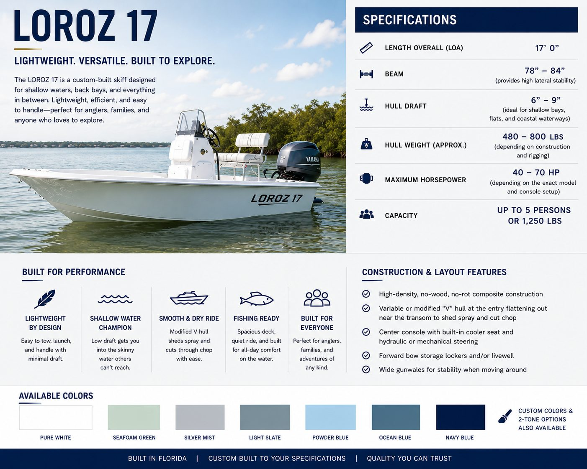
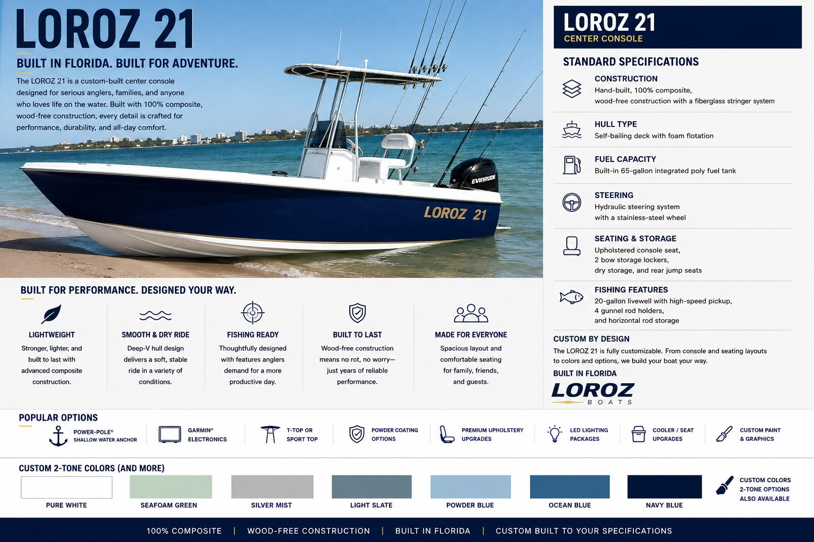

Custom Built in Bradenton, FL
Custom center console skiffs designed for shallow water, coastal cruising, and everyday versatility. Every Loroz is built to your spec.

The LOROZ 17 delivers a smooth, stable ride whether you’re fishing the flats, exploring back bays, or spending the day on the water with family and friends. Premium fiberglass construction and clean modern styling.

Hand-crafted, 100% composite, wood-free construction. Self-bailing deck with foam flotation, hydraulic steering, spacious storage, rear jump seats, and fishing-ready features. Shallow bays to open coastal water.
Specifications
Layouts, rigging, and options vary with custom configurations.


Start Your Build
Free estimates. Tell us what you’re dreaming of.